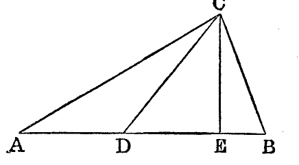

Book II, Section I: Additional Propositions¶
A Sequel to the First Six Books of the Elements of Euclid (5th ed., 1888, pp. 21–26)
f. 0047 · p. 21SECTION I.¶
ADDITIONAL PROPOSITIONS.¶
Prop. 1.—If $ABC$ be an isosceles triangle, whose equal sides are $AC, BC$; and if $CD$ be a line drawn from $C$ to any point $D$ in the base $AB$; then $AD \cdot DB = BC^2 - CD^2$.
Dem.—Let fall the $\perp$ $CE$; then $AB$ is bisected in $E$ and divided unequally in $D$;
$$ \begin{align} \text{therefore} \qquad & AD \cdot DB + ED^2 = EB^2; \\ \text{adding to each side} \qquad & EC^2; \\ \text{therefore} \qquad & AD \cdot DB + CD^2 = BC^2; \quad (\text{I. xlvii.}) \\ \text{therefore} \qquad & AD \cdot DB = BC^2 - CD^2. \end{align} $$
Cor.—If the point be in the base produced, we shall have $AD \cdot BD = CD^2 - CB^2$. If we consider that $DB$ changes its sign when $D$ passes through $B$, we see that this case is included in the last.
Prop. 2.—If $ABC$ be any triangle, $D$ the middle point of $AB$, then $AC^2 + BC^2 = 2 AD^2 + 2 DC^2$.
f. 0048 · p. 22Dem.—Let fall the $\perp$ $EC$.
$$ \begin{align} AC^2 &= AD^2 + DC^2 + 2 AD \cdot DE; \quad (\text{xii.}) \\ BC^2 &= BD^2 + DC^2 - 2 DB \cdot DE. \quad (\text{xiii.}) \end{align} $$
Hence, by addition, since $AD = DB$,
$$ AC^2 + BC^2 = 2 AD^2 + 2 DC^2. $$
This is a simple case of a very general Prop., which we shall prove, on the properties of the centre of mean position for any system of points and any system of multiples. The Props. ix. and x. of the Second Book are particular cases of this Prop., viz., when the point $C$ is in the line $AB$ or the line $AB$ produced.
Cor.—If the base of a $\triangle$ be given, both in magnitude and position, and the sum of the squares of the sides in magnitude, the locus of the vertex is a $\odot$.
Prop. 3.—The sum of the squares of the diagonals of a parallelogram is equal to the sum of the squares of its four sides.
Dem.—Let $ABCD$ be the $\Box$. Draw $CE \parallel$ to $BD$; produce $AD$ to meet $CE$. Now, $AD = BC$ (xxxiv.), and $DE = BC$; $\therefore AD = DE$; hence $AC^2 + CE^2 = 2 AD^2 + 2 DC^2$; but $CE^2 = BD^2$; $\therefore AC^2 + BD^2 = 2 AD^2 + 2 DC^2 = \text{sum of squares of the four sides of the parallelogram}$.
Prop. 4.—The sum of the squares of the four sides of a quadrilateral is equal to the sum of the squares of its diagonals plus four times the square of the line joining the middle points of the diagonals.
Dem.—Let $ABCD$ be the quadrilateral, $E, F$ the middle points of the diagonals. Now, in the $\triangle ABD$, $AB^2 + AD^2 = 2 AF^2 + 2 FB^2$, (2); and in the $\triangle BCD$, $BC^2 + CD^2 = 2 CF^2 + 2 FB^2$; (2) therefore
$$ AB^2 + BC^2 + CD^2 + DA^2 = 2(AF^2 + CF^2) + 4 FB^2 = 4 AE^2 + 4 EF^2 + 4 FB^2 = AC^2 + BD^2 + 4 EF^2. $$
f. 0049 · p. 23
Prop. 5.—The difference of the squares of the sides of a triangle is equal to twice the rectangle contained by the base and the intercept between the middle point of the base and the foot of the perpendicular from the vertex on the base.
Let fall the $\perp$ $CE$. Then
$$ AC^2 - BC^2 = 2 AB \cdot DE. $$
f. 0050 · p. 24
Prop. 8.—If perpendiculars be drawn from the angular points of a square to any line, the sum of the squares of the perpendiculars from one pair of opposite angles exceeds twice the rectangle of the perpendiculars from the other pair of opposite angles by the area of the square.
Dem.—Let $ABCD$ be the square, $L$ the line; let fall the $\perp\text{s } AM, BN, CP, DQ$ on $L$; through $A$ draw $EF \parallel$ to $L$. Then $BN^2 + DQ^2 - 2 AM \cdot CP = (a + b)^2 + (a + c)^2 - 2a(a + b + c) = b^2 + c^2 = BE^2 + DF^2 = BE^2 + EA^2 = BA^2 = \text{area of square}$.
Prop. 9 (:person:`Stewart’s <stewart>` Theorem).—If the base $AB$ of a triangle be divided in $D$, so that $m\,AD = n\,DB$; then
$$ m\,AC^2 + n\,BC^2 = m\,AD^2 + n\,BD^2 + (m + n)\,CD^2. $$


Dem.—Let fall the $\perp CE$; then $m\,AC^2 = m(AD^2 + DC^2 + 2 AD \cdot DE)$ and $n\,BC^2 = n(BD^2 + DC^2 - 2 DB \cdot DE)$ by Euclid II.12 and II.13.
f. 0051 · p. 25
Adding these two relations eliminates the signed projection term $2(m\,AD - n\,DB)\,DE = 0$, giving $m\,AC^2 + n\,BC^2 = m\,AD^2 + n\,BD^2 + (m + n)\,CD^2$. Q.E.D.
f. 0052 · p. 26
Prop. 10 (:person:`Leibniz’s <leibniz>` Theorem on Mean Centres).—If $O$ be the centre of mean position of a system of points $A, B, C, \dots$ for a system of multiples $a, b, c, \dots$, then for any point $P$ in their plane,
$$ a \cdot PA^2 + b \cdot PB^2 + c \cdot PC^2 + \dots = a \cdot OA^2 + b \cdot OB^2 + c \cdot OC^2 + \dots + (a + b + c + \dots) PO^2. $$
Dem.—By Proposition 17 of Book I, $(a + b + c + \dots) \vec{PO} = a\,\vec{PA} + b\,\vec{PB} + c\,\vec{PC} + \dots$. Taking the scalar squares or resolving into rectangular components and applying the linear identity $\sum a\,\vec{OA} = 0$, the cross-product terms vanish identically, leaving the sum of the multiples of the squares from $O$ plus $(\sum a) PO^2$. Q.E.D.